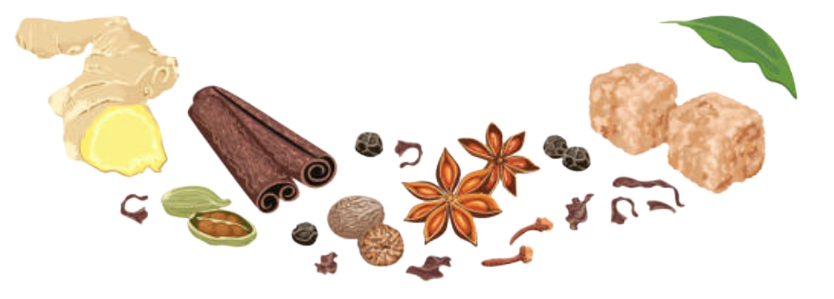
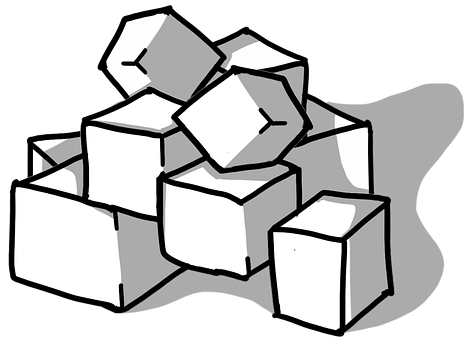
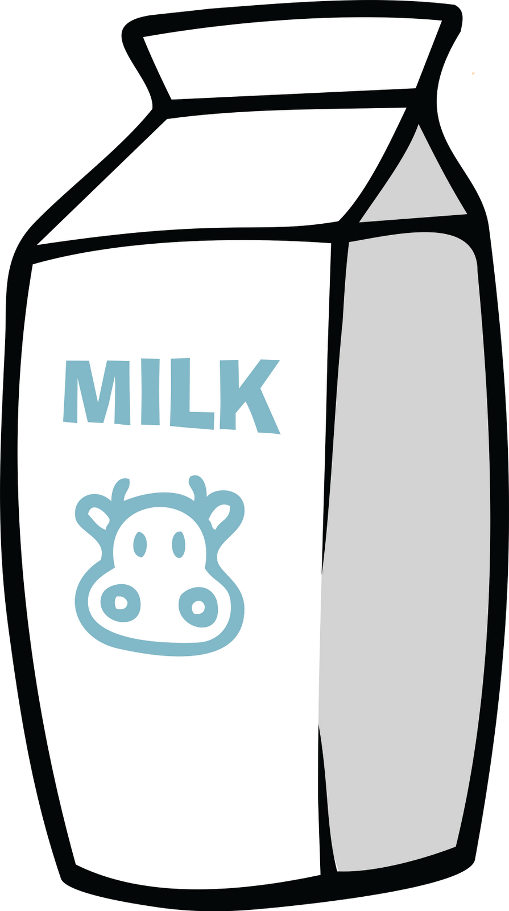

Let's start with the most important ingredients!
Select the spices to add ginger, cardamom and chai powder to our cup


Move your right hand to the spices to add them!
Did you know? Its proper name is masala chai, originating in India, which means spice blend. Chai is actually just a word for tea, though others may recognize its linguistic cousin, cha, which is a common word for tea throughout Asia.
Now lets add two essential ingredient, sugar and milk


Squat down to add them to our chai!
Did you know? In India, most of the milk produced comes from buffalo; cow milk is a close second, and goat milk a distant third.